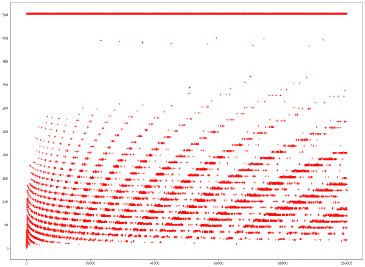

A personal story of perseverance and innovation - from discovering NASA's GLEE mission during Sri Lanka's economic crisis to winning the Overall category in the Lunar Deployment Challenge with team Aerolite.
Read More →VIDURANGA
SHENAL
LANDERS
Undergraduate • Researcher • Inventor
A Computer Science undergraduate focused on the practical applications of quantum computing and astronautics. I enjoy building tangible solutions, whether it's a secure quantum system or hardware for space exploration.
About Me
Introduction
I am Viduranga Landers, a Computer Science undergraduate at the University of Colombo School of Computing. I have a keen interest in quantum computing and space technology, and I enjoy applying my academic knowledge to practical projects in these fields.
I've had the opportunity to explore quantum applications, which led to a research project on a quantum enhanced e-voting system and the development of a quantum key distribution protocol. In the space sector, I have collaborated with international teams on various projects. One of these involved leading a team in a NASA GLEE Mission, where our proposal for a lunar deployment module received the "Best Overall Proposal" award. My work on rover instrumentation has also resulted in two Sri Lankan patents.
Through my studies and experiences in leadership roles with groups like the Space Generation Advisory Council and Nexus Aurora, I hope to continue learning and contributing to these exciting fields.
Recent Honors and Awards
- Winner (Overall Category) - Lunar Deployment Challenge, NASA's GLEE Mission (2024)
- Faculty Award - University of Colombo School of Computing (2024)
- Asia Pacific Space Leader Award - Space Generation Advisory Council (2023)
Recent Publications
- Quantum e-voting system using QKD and enhanced quantum Oracles
16th Annual International Conference on Global Security, Safety and Sustainability (2025) - Economical Lunar Sample Return Mission with Soil Penetration Darts
75th International Astronautical Congress (2024) - Quantum Revolution in Space: Enhancing Space Technology
Space Law Principles and Sustainable Measures, Space Law & Policy Series, Springer (2024)
Connect With Me
Research Metrics
11
Total Citations
Google Scholar + ResearchGate
9
Publications
Conferences + Books Chapters
2
H-Index
Combined Platforms
2
Patents
Sri Lankan IP Office
Last updated: August 2025 | Combined statistics from Google Scholar and ResearchGate
Conference Papers
Quantum e-voting system using QKD and enhanced quantum Oracles
16th International Conference on Global Security, Safety & Sustainability (2024)
This paper introduces Quantegrity, a quantum-enhanced e-voting system that combines traditional Scantegrity e-voting system with novel quantum key distribution protocols based on symmetrically entangled oracles, ensuring unprecedented election security and voter privacy.
Economical Lunar Sample Return Mission with Soil Penetration Darts
75th International Astronautical Congress (2024)
This paper presents an innovative approach to lunar sample return missions using Soil Penetration Darts (SPDs) technology. The SPD system significantly reduces mission costs while enabling deep subsurface sampling capabilities. The research demonstrates how planetary penetrators can revolutionize lunar exploration by providing access to pristine samples from depths previously unattainable by conventional drilling methods.
HOPE-ROAR Mission: Uranian Moons Impactor
74th International Astronautical Congress (2023)
The HOPE-ROAR mission presents an innovative in-depth study of Uranian satellites (Titania) through impactor technology. This research outlines a comprehensive mission design for exploring the icy moons of Uranus using CubeSat-based impactors, providing unprecedented insights into the composition and structure of these distant worlds.
Soil Penetration Darts (SPDs) for Deep Soil Sampling
73rd International Astronautical Congress (2022)
This foundational paper introduces the concept of Soil Penetration Darts for deep planetary soil sampling. The research explores the engineering challenges and solutions for developing high-velocity penetrators capable of collecting samples from depths of several meters below planetary surfaces, and returning them to the surface.
Mercury Sample Return Mission Design
73rd International Astronautical Congress (2022)
This paper details the design of an innovative Mercury sample return mission utilizing cutting-edge technologies and systems. The research addresses the extreme thermal and radiation challenges of Mercury exploration while proposing cost-effective solutions for sample collection and return to Earth for detailed analysis.
A Self Adapting Wheel System for Space Exploration Rovers
72nd International Astronautical Congress (2021)
This research presents the Self-Adapting Wheel System (SAWS), an innovative technology that autonomously adjusts wheel grousers based on terrain conditions. The system enhances rover mobility across diverse planetary surfaces by optimizing traction in real-time, significantly improving mission success rates for planetary exploration.
Book Chapters
Quantum Revolution in Space: Enhancing Space Technology
Space Law Principles and Sustainable Measures, Springer (2024)
This book chapter explores the transformative potential of quantum technologies in space applications, examining how quantum computing, communications, and sensing can revolutionize space exploration, satellite operations, and interplanetary missions while addressing regulatory and sustainability challenges.
Quantum Technologies for Space and Aerial Vehicles
Space Governance, Springer (2024)
This chapter investigates the integration of quantum technologies into space and aerial vehicle systems, covering quantum sensors, quantum communication networks, and quantum computing applications for autonomous navigation, secure communications, and advanced mission planning capabilities.
Preprints
Planetary Penetrators for Space Mining
Space Mining: Humanity’s Quest for Equity , Springer (2025) - Accepted
This chapter examines the role of planetary penetrators in space mining operations, addressing technical capabilities, legal frameworks, and economic implications of using penetrator technology for asteroid and planetary resource extraction while considering sustainable mining practices.
Symmetrically Entangled Quantum Oracles for QKD
ResearchGate Preprint (2023)
Submitted for the Int'l Conference on Advances in ICT for Emerging Regions (2025)
This work introduces novel Quantum Key Distribution protocols based on symmetrically entangled Deutsch-Jozsa oracles. The research demonstrates enhanced security features through symmetric entanglement, offering a novel approach for verification and/or authentication.
Other
Opportunities for Digitization of Sri Lanka's Public Sector
Policy Tribune, Bandaranaike Academy for Leadership and Public Policy (2025)
This policy paper explores the transformative potential of digital technologies in modernizing Sri Lanka's public sector. It examines current challenges, identifies key opportunities for digital transformation, and provides strategic recommendations for implementing effective digitization initiatives across government departments and public services.
Mathematical Arts: SpiraL and Collatz 2.0
Exhibition of Mathematical Art, Joint Mathematics Meetings (2023)
This mathematical art exhibition showcases innovative visualizations including SpiraL patterns and enhanced Collatz Conjecture representations. The work explores the intersection of number theory and visual art, creating compelling geometric patterns that reveal hidden mathematical structures and relationships through artistic interpretation.
Research in Quantum Computing
SEDJ QKD Protocol
Duetsch-Jozsa Oracle Based QKD
Novel Quantum Key Distribution protocol based on Symmetrically Entangled Deutsch-Jozsa algorithm with enhanced security features. Preprint published on ResearchGate.
SESP QKD Protocol
Simon's Oracle Based QKD
Novel Quantum Key Distribution protocol using Symmetrically Entangled Simon's Oracle with semi and fully symmetrical entanglement approaches.
Quantegrity
Quantum e-Voting System
Quantum-enhanced e-voting system combining Scantegrity methodology with SEDJ QKD protocol for unprecedented election security. Presented at ICGS3-24 Conference.
Quantum Circuit & Network Simulator
Full-Stack Quantum Platform
Built a client-side computational quantum computing simulator from scratch and a quantum network simulator with multiple node entanglement capabilities. Developed entirely in JavaScript with visual circuit builder and state-vector simulation.
Research in Astronautics
HA-FPGA Architecture
Hybrid Analog-FPGA Computing
Developing a novel hybrid computing architecture on an FPGA for high-efficiency, radiation-tolerant satellite data processing. Project selected as a semi-finalist in the ACHIEVED competition.
Soil Penetration Darts
Deep Lunar Sampling Technology
Revolutionary planetary penetrator for collecting soil samples from lunar surface's deep layers, developed with Nexus Aurora Corp. Presented at 73rd & 75th IAC.
SAWS Wheel System
Self-Adapting Space Technology
Innovative wheel system that autonomously adjusts grousers for optimal traction on various planetary terrains. Sri Lankan Patent LK21653. Presented at 72nd IAC.
Mercury Sample Return
SGAC Mission Design
Mission design for sample return from Mercury under SGAC's ACHIEVED Initiative. Structures and thermal subsystem lead for innovative spacecraft design.
HOPE Mission
Uranian Moon Exploration
Co-led international team designing CubeSat mission to Uranian moons under SGAC. Innovative in-depth study of Uranian satellites with impactor technology.
Balloon Drones
Novel Space Technology
Novel concept combining expandable helium balloon with CubeSat spacecraft to reduce costs for small-scale planetary missions for Saturnian Moon Titan. SEPG Dream Mission challenge finalist.
Space Related Projects
GLEE Mission
NASA Artemis Challenge
Leading a student team for NASA's Great Lunar Expedition for Everyone. Winning design for Lunar Deployment Module (L-SPyDer) - Overall Category Winner.
Taprobane Rover
Sri Lanka's First Mars Rover
Technical Lead for Sri Lanka's first analog Mars rover with autonomous navigation, robotic arm, and soil sampling capabilities. 17th place ERC 2022 (finalist).
SWORD Drill
Autonomous Extendable Drill
Selenography and Water Observatory Regolith Drill - fully autonomous extendable drilling mechanism for deep lunar drilling operations. Sri Lankan Patent LK21652.
SPIDER Rover
Polar Drilling Explorer
Lunar rover concept capable of drilling and surface mapping for Singapore Space Challenge 2021. Detachable systems design with multiple inventions. Distinction Award winner.
Owlbert AI
STEM Learning Chatbot
AI-powered chatbot for interactive STEM learning, specifically astronomy education. NASA Space Apps Challenge 2020 Global Nominee Award winner.
Asteroid Discovery
Citizen Science Project
International Asteroid Search Campaign participation with 4 provisional asteroid discoveries using Pan-STARRS telescope data.
Other Projects
Adhyana ERP System
Enterprise Resource Planning
Engineered a comprehensive ERP system using a Java-based microservices architecture and a custom front-end framework (mini-React), built from scratch without external libraries for maximum learning and control.
Collatz Generalization
Mathematical Research
Different approach for generalization of the Collatz Conjecture, creating various patterns and mathematical insights through time sequence graphs.
Prime Distribution
Pattern Analysis
Exploration on patterns among intervals between prime numbers, establishing linear connections with interval sizes and prime counts.
Curriculum Vitae
VIDURANGA SHENAL LANDERS
Wattala, Sri Lanka | viduranga-landers | vidurangalanders.github.io | vidurangalanders[at]gmail[dot]com
A highly motivated student with strong leadership qualities who is constantly seeking new challenges to push the limits of his knowledge. Actively seeking academic opportunities in astronautics and quantum computing.
Education
University of Colombo School of Computing
2023 - 2027
BSc (Hons) in Computer Science
- GPA: 3.95/4.00 (Highest) • Director's List (Sem 1,2,3,4) • Faculty Award (Year 1)
- Leadership: Chairperson (ACM), Executive Committee (ISACA), Divisional Manager (SEDS)
QWorld & University of Latvia
2023 - 2024
QClass 23/24 (6 ECTS, Graduate Level)
- Courses: Elements of Quantum Computing and Programming (100%), Elementary Quantum Algorithms (81.4%)
D.S. Senanayake College
2013 - 2022
Secondary Education
- G.C.E. Advanced Level: 2A 1B 1C (Rank: 2256) • SAT: 1490 (790 M, 700 EBRW)
Selected Projects
Quantegrity: Quantum-Secure E-Voting System
Research Project
- Designed and developed a novel e-voting system leveraging Quantum Key Distribution (QKD) and enhanced quantum oracles to ensure information-theoretic security. Published at ICGS3-24 [C.1].
HA-FPGA: Hybrid Analog-FPGA Architecture
Team Aerolite
- Developing a novel hybrid computing architecture on an FPGA for high-efficiency, radiation-tolerant satellite data processing. Project selected as a semi-finalist in the ACHIEVED competition.
Quantum Circuit & Network Simulator
Personal Project
- Built a full quantum circuit simulator from scratch in JavaScript to model quantum gates using a drag and drop layout, and a quantum network simulator to demonstrate basic network protocols.
Publications & Patents
Publications
10 Publications: 6 Conference Papers (IAC, ICGS3), 3 Book Series Chapters (Springer), 1 Policy Brief
Patents
2 Patents: Autonomous Adjustable Grousers (LK21653), Extendable Drill System (LK21652)
Key Achievements
Quantum: QHack Top 40 • Quantum Internet Application Challenge Top 3 • IBM Quantum Challenge Top Scorer
Space: Asia Pacific Space Leader Award • NASA GLEE Winner • NASA SpaceApps Global Nominee
Technical: IEEE Xtreme 2nd/4th in Sri Lanka • European Rover Challenge Finalist • ICGS3 Keynote Speaker
Technical Skills
Programming: C/C++, Python, Java, Scala, Octave, MERN Stack, VHDL, Verilog, Arduino
Quantum: Qiskit, QNE-ADK, SquidASM, Pennylane
Engineering: CAD/FEM (SolidWorks, Inventor), DEM (Altair EDEM), MBSE (Capella), FPGA, IoT
Professional Development
Electronics: FPGA Embedded Systems (ACCIMT) • ASIC/FPGA Design (UoM) • IoT Product Design (UoM)
Quantum: QBronze, QZinc, QMercury, QNickel (QWorld) • IBM Qiskit Global Summer School (4x)
Last Updated: Aug 2025
Blog
June 14, 2024
From Sri Lanka to the Moon: Journey with GLEE
NASA Mission
↠Back to Blog


From Sri Lanka to the Moon: Journey with GLEE
Journey with GLEE
This is my first time writing an article describing something I've done in detail. I've recently found out that the projects I've been involved in have captured the attention of many people. At a recent event, I found myself telling parts of this story repeatedly. So, I thought, "Why not write a blog or an article?" When my team achieved another exciting milestone on the same project, I decided it was time to put finger to keyboard. This is our story of perseverance, innovation, and how programs like GLEE can inspire and empower students in countries with limited resources.
The Beginning
My participation in the Global Lunar Expedition for Everyone (GLEE) began in 2022 amidst Sri Lanka's economic challenges. I stumbled upon this opportunity while browsing a NASA website.
Since grade 10, I've regularly conducted random internet searches using keywords related to astronomy, space, and international student opportunities. I would go through the first few pages of Google search results (never found a dead body in page 2), opening most links, and carefully reviewing the details. Rarely did I find an opportunity I was eligible for, but when I did, I applied.
GLEE was one such opportunity, and it was a dream come true. I had seen similar opportunities for building CubeSats, NanoSats, and CanSats, but they were exclusively available to Europeans or US citizens. GLEE, however, was open to the entire world, and the deadline hadn't passed!
Building Team Aerolite
Our journey began with forming a team and establishing our institution, Aerolite. This team, consisting of Oshadha Pathirana, Jude Thidushan Peiris, Adeepa Gunathilake, Isuru Liyanawadu, and myself had collaborated on many projects before. We had used the name Aerolite for the CERN Beamline for Schools competition, where we needed an institution to represent us. With my mother as our mentor (why not?), we registered for the GLEE workshop program, excited by the opportunity yet concerned about the challenges, especially considering the Sri Lanka's economic turmoil.
GLEE Team #3309 - The original Aerolite team
Receiving our LunaSat kit, containing two LunaSat prototypes (small, chip-like satellites) and other materials, was a delighted moment amidst the uncertainty. We were initially concerned about being accepted as high school students and whether the package would even be delivered due to disrupted services.
GLEE LunaSat kit containing two LunaSat prototypes and other materials
Understanding GLEE Mission
GLEE Mission is one of NASA's Artemis Student Challenges funded by the Colorado Space Grant Consortium, with the goal of sending 500 LunaSats to the Moon. Recent updates indicate that only 50-150 LunaSats will make the journey.
(Visit their website for more details: https://www.glee2023.org/)
GLEE ConOps (Credit: GLEE Team)
These LunaSats, equipped with sensors to collect data from the lunar environment, became the core of our project. The LunaSats included five sensors for scientific data collection, radio communication, and solar panels for power generation. GLEE provided educational materials on each sensor, space mission design, and lunar science. Our task was to complete all the modules and design a mission of our choice, prioritizing certain sensors for our LunaSats. We would test the code on our prototypes and then send it to the GLEE team to upload it to the final space-grade LunaSat.
LunaSat hardware platform with sensors and communication systems (Credit: GLEE)
The Experiments
We conducted all the required experiments and some additional fun experiments, learning extensively about small satellite technology and lunar science. One memorable challenge was participating in the thermopile challenge, recording the highest temperatures during Sri Lanka's hottest days.
GLEE Thermopile Challenge - Recording temperatures during Sri Lanka's hottest days
Another memorable experiment involved placing the LunaSats in a refrigerator for thermal testing. Since we lacked sophisticated equipment, we used my home freezer. When the temperature reached about -4°C, we took them out and continued with other experiments while the LunaSats were plugged into my laptop. We quickly noticed water droplets accumulating on the LunaSats and panicked, but we managed to dry them with a hair dryer. To lighten the mood, we transmitted a popular Sri Lankan meme phrase from one Sat to the other: "Sandamali (a Sri Lankan female name), I am alive."
LunaSats surviving their freezer test - "Sandamali, I am alive"
The Lunar Deployment Module Challenge
After completing the workshop, there was a period of inactivity due to a lack of updates from the GLEE team. They were still seeking launch partners and revising their LunaSat models, leaving our LunaSats Earth-bound for the time being.
Hope was renewed when GLEE announced the Lunar Deployment Module Challenge (LDM). This required designing a robust deployment mechanism for delivering LunaSats to the Moon's surface. By this time, my original team members were busy with university. Determined to take on the challenge, I assembled a new team with my university friends Tharindu Deepaloka Munasinghe, Lisitha Dissanayaka, and Savith Panamgama, along with Harshith Aluvihare, my co-technical lead from the Taprobane project (Sri Lanka's first analog Mars rover project).
New GLEE #3309 Team for the Lunar Deployment Module Challenge
Design and Innovation
We took on the challenge as soon as we finished our exams. Over two weeks, we immersed ourselves in the task. Interestingly, three members had computer science backgrounds with no prior space project experience. This lack of knowledge in space missions led to surprisingly creative ideas, including origami structures, fishing nets, and surface impactors.
Some of the creative Lunar Deployment Module ideas we explored
We created a detailed CAD model, ran simulations, developed Model-Based Systems Engineering (MBSE) models, and built a prototype to validate our design. Out of the two weeks we had, we dedicated an entire week to explore possible ideas for the LDM and conducted thorough research on each one. We evaluated more than five different options with varying degrees of feasibility and, after two more days, agreed upon our final design. Our approach involved enhancing a method already used in orbital ChipSat deployment, adding stabilization for lunar surface conditions. The experience was both challenging and exciting, as we applied theoretical knowledge to a real-world problem.
L-SPyDer (LunaSat Payload Deployer) - Our award-winning design
Our award-winning L-SPyDer Lunar Deployment Module design - Winner of the Overall Category
Team Collaboration
The CAD model creation was expertly handled by Harshith Aluvihare, a seasoned CAD designer. He completed this intricate model in just a few days. While I have experience with spacecraft CAD models myself, Harshith's model was exceptionally detailed given the tight timeframe.
L-SPyDer detailed CAD model designed by Harshith Aluvihare
While I focused on simulations and MBSE models to add extra value to the project, it was Tharindu Deepaloka Munasinghe, Savith Panamgama, and Lisitha Dissanayaka took charge of research and documentation. We worked on the document until the last moment, submitting it right at the deadline. This was the first time I'd ever successfully submitted a project at the exact deadline minute. These people even created some cool drawings that we forgot to include in the document. So, as a justification to their effort, I thought of adding them here.
LunaSat Deployment illustration created by our team
Drawing on Past Experience
This project highlighted the expertise I'd gained from past research. Since 2020, I've worked on various astronautics projects, from conceptual space mission designs to patented space technologies. In my first research project, designing a self-adapting wheel system for rovers, I spent countless hours on Discrete Element Method (DEM) simulations to simulate the terramechanics of a wheel on the Lunar surface. With the help of Tharindu Deepaloka Munasinghe and Lisitha Dissanayaka, I was able to run multiple simulations to make sure our not only deployed the satellites but also maintained their stable orientation after landing at a considerable speed. My experience in regolith simulations and MBSE from previous projects were invaluable in this challenge because the extra work made our submission much more professional.
DEM simulations to validate LunaSat landing orientation and stability
The Victory
Learning we won the Overall category felt unreal. We knew that despite a few minor mistakes, we had a well detailed proposal, but we were really excited to see that our hard work and innovative approach were recognized.
Experimenting with L-SPyDer prototype to validate our design
Outreach and Community Impact
In 2022, while we were still in the middle of the workshop modules, we were eager to share our knowledge and showcased our prototypes at a school science exhibition. This was our first outreach activity, and it allowed us to engage with the public, including Dr. Henry Throop, a passionate supporter who has followed our progress ever since.
In April 2024, we were invited to the AISSA Expo, an all-island school science exhibition. With my new team, we showcased our LunaSats and some of my personal research. The exhibition was a success, with many inspired by our achievements, rare in Sri Lanka. We demonstrated the LunaSats' capabilities and explained how they collect and transmit data.
A highlight was meeting another LDM team led by Navindu Jayawardhane. Though they hadn't participated in the GLEE workshop, we shared our experiences and guided them. Witnessing their enthusiasm and helping them succeed was incredibly rewarding. Their recognition as the Most Creative category winner was a testament to the collaborative spirit fostered by GLEE.
GLEE Team #3309 at AISSA Expo sharing our achievements with the community
Reflections and Gratitude
Our journey has been transformative for us and our community. GLEE provided an incredible opportunity to engage deeply with space science, fostering a passion that will shape our future careers. For Sri Lanka, with limited space-related resources, GLEE has been invaluable. Two Sri Lankan teams won categories in the LDM challenge, demonstrating that with determination and support, we can achieve great things.
We are immensely grateful to GLEE for this cost-free opportunity. Programs like these inspire and empower the next generation of scientists and engineers, especially in countries where such opportunities are rare. The hands-on experience, challenges, and achievements have contributed significantly to our growth as aspiring space scientists.
Thank you, GLEE, for transforming aspirations into achievements and proving that the spirit of exploration knows no bounds.
To the Moon!
~ Viduranga Landers ~
Mathematical Art & Fractals
Several years have passed since I made my first piece of mathematical digital art, simply a fractal. Since then, I've been obsessed with fractals and have recreated several of the most well-known fractals. In 2021, while attempting to generalize the Collatz conjecture, I rediscovered a part of a previously published generalization. While the generalization existed as a conjecture, I was able to generate amazing fractals from it. Since then, I've utilized the generalization of the Collatz conjecture to construct a multitude of astounding fractals.
Complete Mathematical Art Gallery

Collatz Feather
Visualizing the trajectory lengths of Collatz sequences as a feather-like structure

Collatz Feather 2.0
Enhanced version with improved mathematical visualization techniques

SpiraL
Using spiral coordinates to reveal hidden symmetries in Collatz sequences

SpiraL Core
The core essence of spiral mathematics captured in intricate patterns

SpiraL Extended
Extended exploration of spiral coordinate systems

Fractal Art Collection I
Exploring various fractal generation techniques

Fractal Art Collection II
Continuing the exploration with different parameter sets

Fractal Art Collection III
Demonstrating the vast diversity within fractal mathematics

Fractal Art Collection IV
Exploring new territories in mathematical visualization

Fractal Art Collection V
Ongoing exploration of fractal mathematics and artistic expressions

Fractal Art Collection VI
Evolution of fractal art techniques and mathematical understanding

Galaxy Fractal
Cosmic-inspired fractal mirroring galactic spiral structures

Fractal Art Collection VII
Demonstrating mastery of fractal generation algorithms

Springy Star
Star-like patterns from spring-system simulations

Springy Star 2.0
Enhanced version with refined parameters and improved aesthetics

Springycomb 1.0
Combining honeycomb structures with spring dynamics

Springycomb 2.0
Second iteration with evolved mathematical complexity

Springycomb 3.0
Most sophisticated version of the Springycomb series

Springycomb Merge
Complex mathematical patterns forming honeycomb-like structures

Springycomb Core
Essential core structure of the Springycomb visualization series

Double Spiral
Dual spiral systems creating complex mathematical beauty

Double Spiral 2.0
Enhanced version with refined parameters and improved complexity

Collatz Feather 3.0
Third evolution featuring advanced visualization techniques

Collatz Feather 4.0
Fourth and most sophisticated iteration of the series

Fractal Art Collection VIII
Eighth piece in the ongoing fractal exploration series

Collatz Web
Web-like structures from Collatz sequence visualizations

Web Spiral Core
Core structure revealing fundamental patterns in complex systems

Web Spiral
Intricate web-like patterns emerging from mathematical sequences

Collatz Star
Star-shaped patterns bridging mathematics and cosmic imagery

Collatz Rainbow
Colorful visualization of Collatz conjecture variations

Fractal Art Collection IX
Ninth piece in the comprehensive fractal collection

White Rainbow
Monochromatic interpretation of rainbow-like patterns

Fractal Art Collection X
Tenth installment in the fractal exploration series

Fractal Art Collection XI
Eleventh piece continuing the mathematical art journey

Heart + SpiraL
Combining heart curves with spiral dynamics

Heart
Pure mathematical representation of heart-shaped curves
×

Loading...
↠Back to Projects

Soil Penetration Darts (SPD)
A Soil Penetration Dart (SPD) is a planetary penetrator developed to collect soil samples from the lunar surface's deep layers. Nexus Aurora Corp, DE, USA, is actively developing the project with a team of six members. The research findings were presented during the 73rd and 75th International Astronautical Congresses and were published in the congress proceedings.
SPD Exploded View
Revolutionary Technology
The SPD system represents a paradigm shift in lunar sample collection methodology. Unlike traditional drilling systems that require complex machinery and extensive power systems, SPDs utilize high-velocity impact to penetrate deep into the lunar regolith, collecting pristine samples from previously inaccessible depths. Sample containers are equipped with a small rocket booster and a drill auger to assist it to reach the surface.
Key Features
- Hyper-velocity impact capability for deep penetration
- Autonomous sample collection and storage systems
- Sample return to surface
- Cost-effective alternative to traditional drilling methods
- Minimal power requirements compared to conventional systems
SPD Components Breakdown
Mission Architecture
The SPD mission architecture may incorporate multiple deployment strategies, ranging from orbital release to lander-based deployment. However, this project only explores orbital deployment. Each dart is equipped with sophisticated instrumentation for real-time analysis and sample preservation during the high-impact collection process. It is also equipped with a specialized drill auger to climb to the surface through the impact hole, an ascent that is further assisted by a solid rocket booster with a slow burn rate. Upon arrival at the surface, a second propulsion stage could deliver the sample collector to Lunar orbit, or a rover could collect it and perform further analysis onboard.
SPD Mission Concept of Operations
Technical Specifications
- Impact velocity: 50-200 m/s depending on mission requirements
- Penetration depth: Up to 5 meters in lunar regolith
- Sample capacity: 100-500g per dart
International Recognition
The SPD project has gained significant recognition in the international astronautical community. Our presentations at the IAC have sparked discussions about the future of sample return missions and the potential for cost-effective exploration of multiple celestial bodies.
↠Back to Projects
SAWS - Self-Adapting Wheel System
Lunarbot, a research team of four Sri Lankan students, created the Self-Adapting Wheel System. It was first conceptualized as part of the SPIDER lunar rover proposal for the Singapore Space Challenge 2021. It was later improved as a customizable wheel system for any space exploration rover. The outcomes of the research were presented at the 72nd International Astronautical Congress in Dubai and published in the congress proceedings.
SAWS Adaptive Wheel System Design
Adaptive Technology Innovation
The Self-Adapting Wheel System represents a breakthrough in planetary exploration mobility. This patented technology enables rovers and exploration vehicles to automatically adapt their wheel configuration based on terrain conditions, dramatically improving traction and reducing wheel sinkage and energy consumption in challenging environments.
Key Innovations
- Dynamic grouser reconfiguration based on real-time terrain analysis
- Autonomous adaptation algorithms with machine learning capability
- Enhanced traction on loose surfaces and steep gradients
- Reduced wear and energy consumption through optimized contact
- Robust design capable of withstanding extreme environmental conditions
SAWS Presentation at IAC 2021
Real-World Validation
Lunarbot has collaborated with Nexus Aurora Corp., DE, USA, to physically construct and incorporate the wheel system into their Scout, Sample, and Map (SSAM) analog Mars rover. The SAWS integrated SSAM rover (SSAM v2.0) was to be tested at the Mars Society's Mars Desert Research Station in Utah during its test period in April 2023 (postponed).
Testing in Utah was cancelled and postponed due to a funding opportunity from NASA JPL to test the SSAM rover along with SAWS wheels in Arctic. The project has since been in hold.
SAWS Integrated SSAM Rover (Credits: Nexus Aurora)
Testing Achievements
- Early prototype development with 3D printed components
- Performance validation with terramechanic and finite element simulations
Patent and Intellectual Property
Local patents were applied for this concept in March 2021 (Application No. LKA21653), recognizing the innovative nature of the adaptive wheel technology and its potential for commercial applications in both terrestrial and space robotics. Sri Lankan patent received in October 2023 (LK 21653).
Future Applications
The SAWS technology has applications beyond planetary exploration, including terrestrial robotics, autonomous vehicles for extreme environments, and next-generation mobility solutions for challenging terrains on Earth.
↠Back to Projects
Mercury Sample Return Mission Design
This research was conducted under the guidance of the Space Exploration Project Group (SEPG) of the Space Generation Advisory Council (SGAC) as part of the ACHIEVED Initiative, which stands for Assembly for Concepts in Human Interplanetary Exploration with Various Extraterrestrial Designations. As the Structures and Thermal Subsystems lead, I contributed to designing a comprehensive Mercury sample return mission architecture.
Mercury Lander with Ascent Segment Configuration
Mission Architecture
The Mercury sample return mission represents one of the most challenging planetary exploration endeavors due to Mercury's extreme environment and proximity to the Sun. Our mission design addresses the unique thermal, structural, and operational challenges posed by Mercury's harsh conditions.
Mission Objectives
- Collect pristine surface samples from multiple Mercury locations
- Analyze planetary composition and geological history
- Study Mercury's magnetic field and internal structure
- Demonstrate advanced thermal protection technologies
- Validate sample preservation techniques for extreme environments
Mercury Orbiter System Design
Technical Challenges
Mercury's environment presents unique engineering challenges that required innovative solutions. As Structures and Thermal Subsystems lead, I focused on developing systems capable of withstanding extreme temperature variations and intense solar radiation.
Engineering Solutions
- Advanced thermal protection systems for extreme temperature variations
- Radiation-hardened electronics and shielding systems
- Lightweight composite structures optimized for launch constraints
- PlanetVac Sampler integrated lander legs for sample collection
- Innovative sample preservation technologies for return journey
- Autonomous navigation systems for limited communication windows
Complete Spacecraft Systems Architecture
International Collaboration
The ACHIEVED initiative brought together emerging space professionals from around the world, fostering international collaboration and knowledge exchange. The project demonstrated how diverse expertise can be combined to tackle complex space exploration challenges.
Project Achievements
- Comprehensive mission design completed within less than a year
- Presentation at 73rd International Astronautical Congress in Paris
- International collaboration with space professionals worldwide
- Advanced thermal and structural system designs validated
Research Impact
This mission design contributes to the broader understanding of Mercury exploration challenges and provides a foundation for future sample return missions to inner planets. The thermal and structural solutions developed could be applied to other extreme environment missions.
↠Back to Projects

HOPE-ROAR Mission
The High-technology Operation for Planetary Exploration - Uranian Moons Impactor (HOPE-ROAR) mission represents an ambitious deep space exploration initiative targeting the icy moons of Uranus. As one of two co-leads for this SGAC ACHIEVED project, I helped design an innovative mission architecture to study these distant and mysterious worlds through advanced impactor technology.
HOPE-ROAR Mission Concept of Operations
Mission Overview
The HOPE-ROAR mission addresses one of the most challenging frontiers in planetary science: the exploration of Uranian satellites. These icy moons hold crucial information about the formation and evolution of the outer solar system, potentially harboring subsurface oceans and unique geological processes.
Mission Objectives
- In-depth compositional analysis of Uranian satellite surfaces and subsurfaces
- Search for evidence of subsurface oceans and geological activity
- Advancement of CubeSat technology for deep space applications
- Demonstration of cost-effective outer planet exploration techniques
Impactor Mission Operations and Deployment Strategy
Technical Innovation
The HOPE-ROAR mission showcases several breakthrough technologies, including novel CubeSat-based impactor designs and advanced computational solutions such as analog computing and communication optimization strategies for the complex environment of the Uranian system.
Key Technologies
- Miniaturized impactor spacecraft based on CubeSat architecture
- Advanced deep space communication protocols for extreme distances
- Innovative power systems for extended deep space operations
- Analog Computing for increased onboard computing capabilities
- Specialized scientific instrumentation for impact analysis
Detailed Impactor Spacecraft CAD Model
Leadership Role
As project co-lead, I was responsible for coordinating international team efforts, managing technical development timelines, and ensuring project deliverables met SGAC standards. This leadership experience provided valuable insights into managing complex, multi-disciplinary space missions.
Leadership Responsibilities
- Team coordination across multiple time zones and countries
- Technical milestone planning and execution oversight
- Integration of diverse engineering disciplines and expertise
- Quality assurance for mission design documentation
Scientific Impact
The HOPE-ROAR mission design represents a significant contribution to outer planet exploration strategies. The innovative use of impactor technology could revolutionize how we study distant icy moons and advance our understanding of the outer solar system.
Research Achievements
- Comprehensive mission architecture design completed
- Published research at 74th International Astronautical Congress
- International recognition for innovative mission concept
- Advancement of CubeSat technology for deep space applications
- Contribution to Uranian system exploration knowledge base
↠Back to Projects
Balloon Drones
Overview
Balloon Drone is a novel concept that combines an expandable helium balloon with a CubeSat based spacecraft to reduce the cost of performing small scale planetary missions on the Saturnian moon, Titan. The abstract was shortlisted for the second round of the AAE-SEPG Dream Mission Call 2023.
Mission Concept
This innovative approach leverages the buoyancy characteristics of expandable helium balloons to provide extended mission duration and enhanced scientific capabilities for small-scale planetary exploration missions.
Balloon Drones mission concept design
Mission Design
The Balloon Drone mission architecture integrates proven CubeSat technologies with balloon deployment systems to create a cost-effective platform for planetary atmospheric studies and surface observations.
Comprehensive mission overview and operational phases
Recognition & Resources
The project was recognized by the AAE-SEPG Dream Mission Call 2023, highlighting its potential for advancing low-cost planetary exploration missions.
↠Back to Projects

Different Approach for A Generalization of the Collatz Semi-Group
Introduction
The 3x+1 problem (Collatz Conjecture) inspired this research initiative. After playing around with the conjecture for a while, my first instinct was to generalize it and substitute the "3" and "1" in the "3x+1" equation with variables. While a single error is not always good, two errors may be advantageous at times. That's how I came across a generalization to the years old Collatz Conjecture.
Research Approach
Later, I discovered that Prof. M. Bruschi had proposed a similar generalized form in 2008, with a challenge to disprove his idea. While his approach was with methodical proofs, mine was based on time sequence graphs, which are often used to visualize the Collatz Conjecture. The intriguing result is that, while this approach provides another way to obtain Prof. M. Bruschi's conjecture, when applied to his generalized equation, it produces various patterns that are difficult to define with my limited expertise.
Mathematical Foundations
The research explores various generalizations of the classical Collatz sequence through parametric variations, examining the behavior of modified recurrence relations under different constraints.
Equation 1 (m=1) - The classic Collatz Conjecture formulation

Equation 2 (m=1) - First generalization variant
Equation 3 (m=1) - Extended generalization form
Pattern Analysis
Through computational exploration and visualization, the research reveals complex chaotic behaviors emerging from seemingly simple modifications to the original conjecture. These patterns suggest deeper mathematical structures that require further investigation.
Chaotic graph patterns emerging from generalized equations
Complex chaotic behaviors in modified Collatz sequences
Small underlying patterns within chaotic graph structures
Interactive Tools
To support further exploration and validation of these mathematical patterns, an interactive visualization tool has been developed to allow real-time exploration of the Collatz sequences and their generalizations.
↠Back to Projects
A Pattern Among the Intervals Between Prime Numbers
Research Objective
The goal of this project was to find the least number of primes in any given interval size at any place on the numberline. So far, it has been established that this minimum number has a close linear connection with the number of primes and the size of the interval.
Mathematical Investigation
This research explores the distribution patterns of prime numbers across different interval sizes, seeking to establish predictable bounds on prime density within arbitrary segments of the number line.
Minimum prime count analysis for intervals of 20,000+ numbers
Comparative Analysis
The research compares theoretical minimum prime counts with actual observed distributions, revealing linear relationships between interval size and prime density that could have significant implications for number theory.
Comparison of actual and minimum prime counts for 10,000-number intervals
↠Back to Projects
SEDJ QKD Protocol
Protocol Overview
A Quantum Key Distribution (QKD) protocol was implemented using two modified versions of the Deutsch-Jozsa algorithm. Symmetric entanglement of qubits was utilized for the creation of this protocol and the two versions differs by the semi and fully symmetrical entanglement of Alice's and Bob's circuits.
Symmetrically Entangled Deutsch-Jozsa Oracle
This research explores novel applications of the Deutsch-Jozsa algorithm in the context of quantum cryptography, specifically focusing on how symmetric entanglement can enhance the security and efficiency of key distribution protocols.
Key generation results for fully entangled oracle implementation
Key generation results for semi entangled oracle implementation
Protocol Architecture
The implementation demonstrates two distinct approaches to quantum entanglement in key distribution: fully symmetrical and semi-symmetrical entanglement schemes, each offering different trade-offs in security and computational complexity.
QKD protocol schematic for fully entangled oracle (based on Ampatzis & Andronikos, 2021)
QKD protocol schematic for semi entangled oracle (based on Ampatzis & Andronikos, 2021)
Research Publication
The findings and methodology have been documented in a comprehensive research paper exploring the theoretical foundations and practical implementations of symmetrically entangled quantum oracles for secure key distribution.
↠Back to Projects

SESP QKD Protocol
Protocol Design
A Quantum Key Distribution (QKD) protocol was implemented using two modified versions of the Simon's problem oracle. Symmetric entanglement of qubits was utilized for the creation of this protocol and the two versions differs by the semi and fully symmetrical entanglement of Alice's and Bob's circuits.
Symmetrically Entangled Simon's Oracle
This implementation explores the application of Simon's quantum algorithm in cryptographic contexts, demonstrating how the oracle's unique properties can be leveraged for secure key generation through symmetric entanglement schemes.
Key generation results for fully entangled Simon's oracle
Comparative Analysis
The research examines the performance differences between fully and semi-symmetrical entanglement approaches in the context of Simon's problem, providing insights into optimal configurations for quantum key distribution applications.
Key generation results for semi entangled Simon's oracle
Quantum Cryptographic Applications
This work contributes to the growing field of quantum cryptography by demonstrating practical applications of classical quantum algorithms in security protocols, specifically highlighting the versatility of Simon's problem beyond its traditional computational applications.
↠Back to Projects
Quantegrity
System Overview
A Quantum enhanced e-voting system based on the Scantegrity e-voting system and symmetrically entangled Deutsch-Jozsa quantum oracle based QKD protocol.
Quantum-Enhanced Security
Quantegrity represents a groundbreaking approach to electronic voting by integrating quantum cryptographic protocols with proven e-voting methodologies, ensuring unprecedented security and verifiability in democratic processes.
Complete Quantegrity system architecture design
Scantegrity Integration
The system builds upon the established Scantegrity e-voting framework, enhancing its security through quantum key distribution protocols that provide information-theoretic security guarantees.
Scantegrity e-voting ballot system implementation
Quantum Key Distribution Protocol
The core innovation lies in the integration of the SEDJ (Symmetrically Entangled Deutsch-Jozsa) oracle-based quantum key distribution protocol, providing cryptographic security that is fundamentally protected by the laws of quantum mechanics.
SEDJ oracle-based quantum key distribution protocol
Innovation
Quantegrity represents a significant advancement in secure voting technology, combining the transparency and verifiability of Scantegrity with the unbreakable security of quantum cryptography, paving the way for next-generation democratic systems.
↠Back to Projects
Global Lunar Expedition for Everyone
Mission Overview
GLEE is one of NASA's Artemis Student Challenges and is a fully funded project to remotely develop two LunaSats. 213 teams were accepted for the remote edition, and I'm honored to lead one of two teams from Sri Lanka. Due to the Silicon shortage, LunaSat Kits were delivered in September 2022. Our team completed the initial workshop modules by 2023. We took part in the Lunar Deployment Module Challenge in 2024 and our design was chosen as the overall winner.
Project Development
The Global Lunar Expedition for Everyone represents an unprecedented opportunity for international student collaboration in lunar science and engineering. Our team's participation showcases Sri Lankan capabilities in space technology development and international scientific cooperation.
LunaSat hardware platform (Credit: GLEE)
Award-Winning Design
Our team's innovative approach to the Lunar Deployment Module Challenge resulted in an overall winning design, demonstrating creative engineering solutions for lunar surface operations and scientific data collection.
Lunar Deployment Module - L-SPyDer design
Current Development
We are currently working with the GLEE team to evaluate their latest modules that explains how to develop our own LunaSat, continuing our contribution to NASA's Artemis program and advancing lunar exploration capabilities.
Program Resources
As part of NASA's comprehensive education initiative, GLEE provides students worldwide with hands-on experience in space technology development, mission planning, and international collaboration in lunar science.
↠Back to Projects
Taprobane Mars Rover
Taprobane represents a historic milestone as Sri Lanka's first analog Mars rover, developed by SEDS Sri Lanka. This six-wheeled autonomous rover features advanced rocker-boggie suspension, a precision robotic arm, and specialized sampling equipment designed for challenging planetary exploration missions.
Taprobane Mission Patch (Credit: SEDS SL)
Engineering Excellence
Taprobane incorporates cutting-edge robotics technology adapted for the harsh Martian environment. Every component has been carefully designed and tested to ensure reliable operation in extreme conditions while maintaining the flexibility needed for scientific exploration missions.
Advanced Features
- Six-wheeled rocker-bogie suspension system for stable terrain traversal
- Autonomous navigation system with advanced obstacle avoidance algorithms
- Multi-degree-of-freedom robotic arm with precision sample collection
- Sophisticated communication and control systems for remote operation
- Ruggedized design capable of withstanding extreme temperature variations
- Specialized scoop system for soil sample acquisition
Taprobane v4.0 Rover Design (Credit: SEDS SL)
International Competition Success
Taprobane has competed successfully in multiple international rover competitions, earning recognition for its innovative design and reliable performance. The project has positioned Sri Lanka as an emerging player in space technology and has opened doors for future international collaborations.
Competition Achievements
- 4th place in International Rover Design Challenge (IRDC) by Mars Society South Asia
- 17th place (Finalist) in on-site European Rover Challenge 2022 organized by Space Foundation
- 5th place (Qualification A) in remote edition of European Rover Challenge 2023
Technical Innovations
Taprobane showcases several breakthrough technologies developed specifically for planetary exploration. The rover's modular design philosophy allows for easy maintenance and upgrades, while its intelligent systems enable autonomous operation in environments where real-time control from Earth is impossible.
Mission Capabilities
- Challenging terrain traversal and navigation
- Precision object manipulation and gripping
- Soil sample collection and analysis
- Autonomous mission execution and reporting
- Multi-task operational flexibility
Taprobane Team Leadership (Credit: SEDS SL)
Legacy and Future Impact
Beyond its technical achievements, Taprobane has created a lasting legacy in Sri Lankan education and research. The project has demonstrated that innovative space technology can be developed locally, inspiring universities and research institutions to invest in space science programs and fostering a new generation of space engineers.
↠Back to Projects
Selenography and Water Observatory Regolith Drill
Innovation Overview
Lunarbot, a research team of four Sri Lankan students, created the Selenography and Water Observatory Regolith Drill (SWORD). It was first conceptualized as part of the SPIDER lunar rover proposal for the Singapore Space Challenge 2021. Local patents were applied for this concept in March 2021. (Application No. LKA21652)
Autonomous Drilling Technology
SWORD represents a breakthrough in autonomous lunar drilling systems, designed specifically for selenography studies and water detection in lunar regolith. The extendable drill architecture provides unprecedented flexibility for deep subsurface exploration.
SWORD autonomous regolith drilling system
Extendable Drill Architecture
The innovative drill bit design allows for modular extension during operation, enabling deeper penetration into lunar regolith while maintaining structural integrity and precision control throughout the drilling process.
Modular extendable drill bit system design
Patent & Recognition
The SWORD concept has been protected under local patent application LKA21652, recognizing its novel contribution to lunar exploration technology and autonomous drilling systems for space applications.
↠Back to Projects
Super Polar Investigative Drilling Exploration Rover
Mission Concept
SPIDER is a lunar rover concept capable of drilling and surface mapping proposed for the Singapore Space Challenge 2021, which was hosted by the Singapore Space Technologies Ltd. This was team Lunarbot's first major project, and we competed under the supervision of SEDS Sri Lanka. The design received the Distinction Award as one of two runner-up teams.
Modular Architecture
SPIDER is made up of two detachable independent systems. SPIDER is also where Lunarbot's future projects Self Adapting Wheel System(SAWS) and Selenography & Water Observatory Regolith Drill(SWORD) were born.
SPIDER lunar rover complete system design
Advanced Capabilities
The rover design incorporates advanced drilling capabilities for subsurface exploration and comprehensive surface mapping systems for detailed lunar terrain analysis. The modular approach allows for flexible mission configurations and component redundancy.
SPIDER rover in operational configuration
Detachable Systems
One of SPIDER's key innovations is its ability to separate into independent operational units, allowing for parallel exploration activities and enhanced mission flexibility in challenging lunar environments.
SPIDER rover detaching sequence demonstration
Award Recognition
The SPIDER design was recognized with the Distinction Award as one of two runner-up teams in the Singapore Space Challenge 2021, highlighting its innovative approach to lunar exploration and technical excellence.
↠Back to Projects
Owlbert AI
Owlbert is an AI-powered chatbot that revolutionizes STEM education by helping people learn astronomy and space science in a non-traditional, interactive way. This innovative educational technology was developed for the NASA Space Apps Challenge 2020, where it earned the prestigious Global Nominee Award, recognizing its potential to transform how students engage with complex scientific concepts.
Owlbert Educational Platform Overview
Revolutionary Learning Experience
Owlbert breaks away from traditional textbook-based learning by providing an interactive, conversational approach to astronomy education. The AI chatbot adapts to individual learning styles and paces, making complex astronomical concepts accessible to learners of all ages and backgrounds.
Key Features
- Interactive AI-powered conversations about astronomy and space science
- Personalized learning paths adapted to individual student needs
- Real-time Q&A support for complex astronomical concepts
- Gamified learning experiences to maintain student engagement
- Multi-platform accessibility for widespread educational reach
- Integration with NASA educational resources and datasets
NASA Space Apps Challenge Success
Owlbert's selection as a Global Nominee in the NASA Space Apps Challenge 2020 highlights its innovative approach to solving real-world educational challenges. The project stood out among thousands of submissions worldwide for its practical application and potential to democratize space science education.
NASA Space Apps Challenge 2020 Global Nominee Award
Achievement Highlights
- Global Nominee Award from NASA Space Apps Challenge 2020
- Recognition for innovative educational technology development
- International acclaim for non-traditional learning approaches
- Contribution to democratizing space science education
- Platform for inspiring future space scientists and engineers
Educational Impact
Beyond its technical achievements, Owlbert represents a fundamental shift in how we approach STEM education. By leveraging AI technology to create personalized learning experiences, the platform has the potential to inspire a new generation of scientists, engineers, and space enthusiasts.
Learning Outcomes
- Enhanced student engagement with astronomical concepts
- Improved retention of complex scientific information
- Accessibility for diverse learning styles and abilities
- Real-time feedback and adaptive content delivery
- Preparation for advanced STEM education pathways
Future Vision
Owlbert's success demonstrates the potential for AI-driven educational technologies to transform STEM learning. The platform serves as a foundation for expanding interactive education into other scientific domains, creating a comprehensive suite of AI tutors for various STEM subjects.
↠Back to Projects
International Asteroid Search Campaigns
Citizen Science Project
International Asteroid Search Campaign is a monthly citizen science project organized by the International Astronomical Search Collaboration (IASC) and Pan-STARRS. Each campaign enables dozens of small teams to participate in asteroid hunting by providing them with real data sets from Pan-STARRS telescopes.
Discovery Process
A preliminary asteroid candidate list is published at the end of each campaign. After a few months, the list of provisional asteroids is published, and the discoverers receive a certificate for their efforts. Provisional asteroids will remain provisional for several years until their orbits are confirmed.
Astronomical Contributions
Through systematic analysis of telescope data, citizen scientists contribute to the global effort of mapping near-Earth objects and potentially hazardous asteroids, playing a crucial role in planetary defense and astronomical research.
My Provisional Discoveries
Contributing to the global asteroid catalog through the identification of the following provisional asteroids:
- 2020PX12 - Provisional asteroid discovered during 2020 campaign
- 2020QF3 - Near-Earth object candidate identification
- 2020TL54 - Main belt asteroid discovery
- 2021CH23 - Most recent provisional discovery
Impact & Recognition
These discoveries contribute to the comprehensive mapping of our solar system's small bodies and demonstrate the valuable role of citizen science in modern astronomical research and planetary protection efforts.
↠Back to Projects
Quantum Circuit & Network Simulator
Project Overview
Built a client-side computational quantum computing simulator from scratch and a quantum network simulator with multiple node entanglement capabilities. This project represents a comprehensive approach to quantum education and research, featuring intuitive visual interfaces and basic simulation capabilities.
Quantum Circuit Simulator with drag-and-drop interface
Technical Implementation
Developed entirely in JavaScript, the platform features:
- Visual Circuit Builder: Intuitive drag-and-drop interface for constructing quantum circuits
- State-Vector Simulation: Real-time quantum state computation and visualization
- Quantum Network Protocols: Implementation of basic quantum communication protocols
- Multi-Node Entanglement: Advanced simulation of quantum network topologies
Quantum Network Simulator with multi-node entanglement
Educational Impact
The simulator serves as both a learning tool and research platform, making quantum computing concepts accessible through visual representation while maintaining computational accuracy for advanced research applications.
Future Contributions
Planning to contribute this work as a library to the Ballerina Language ecosystem, expanding accessibility for quantum computing education and research in the broader programming community.
↠Back to Projects
Hybrid Analog-FPGA Computing Architecture
Project Overview
Developing a novel hybrid computing architecture that combines analog processing with FPGA technology for highly efficient, reconfigurable and repairable computing for satellite data processing. This groundbreaking approach addresses the unique computational challenges of space environments while maximizing performance and reliability.
Hybrid Analog-FPGA Architecture Overview
Technical Innovation
The HA-FPGA architecture represents a paradigm shift in space computing:
- Hybrid Processing: Seamless integration of analog and digital computation for optimal efficiency
- Reconfigurability: Reconfigurable modules for crypto agility and depreciated payloads
- Repairability: In-space repairability for increased sustainability
- Real-time Processing: High-speed data processing for AI/ML workloads
Satellite data processing implementation
ACHIEVED Competition Recognition
Currently selected as a semi-finalist in the ACHIEVED competition, recognizing the innovative potential and technical excellence of our approach to space computing challenges.
↠Back to Projects
Adhyana ERP System
Project Overview
Engineered a comprehensive Enterprise Resource Planning (ERP) system from the ground up, utilizing a Java-based microservices architecture coupled with a custom-built front-end framework, an API gateway, and a simple distributed database management system. This project emphasizes learning through implementation, avoiding external libraries to maximize understanding of system architecture and design patterns.
Adhyana ERP System Dashboard
Technical Architecture
The system demonstrates advanced software engineering principles:
- Microservices Design: Modular Java-based backend with clear service boundaries
- Custom Frontend Framework: Mini-React implementation built from scratch
- No External Dependencies: Pure implementation for maximum learning and control
- Scalable Architecture: Designed for enterprise-level resource planning
Java-based microservices architecture diagram (Placeholder Image)
Educational Value
This project serves as a comprehensive learning exercise in:
- Enterprise software architecture and design patterns
- Microservices implementation and communication
- Custom framework development and component design
- Full-stack development without framework dependencies
Key Features
The ERP system includes comprehensive modules for resource planning, user management, and enterprise operations, demonstrating real-world applicability while maintaining educational focus on fundamental software engineering principles.
Contact Information
Get In Touch
I'm always interested in discussing research opportunities, collaborative projects, or potential positions in astronautics and quantum computing. Feel free to reach out through any of the channels below.
📧 Email
💼 LinkedIn
📊 Research
📠Location
Colombo, Sri Lanka
Available for remote collaboration
🎯 Research Interests
Quantum Computing, Space Technology,
Computer Architecture, Hardware Security